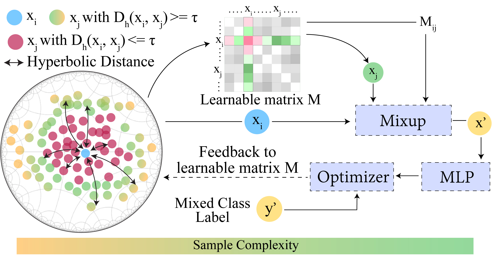

<div id="ajax-page" class="ajax-page-content">
    <div class="ajax-page-wrapper">
        <div class="ajax-page-nav">
            <div class="nav-item ajax-page-prev-next">
                <a class="ajax-page-load" href="portfolio-project-3.html"><i class="lnr lnr-chevron-left"></i></a>
                <a class="ajax-page-load" href="portfolio-project-1.html"><i class="lnr lnr-chevron-right"></i></a>
            </div>
            <div class="nav-item ajax-page-close-button">
                <a id="ajax-page-close-button" href="#"><i class="lnr lnr-cross"></i></a>
            </div>
        </div>

        <div class="ajax-page-title">
            <h1>DMix: Adaptive Distance-aware Interpolative Mixup</h1>
        </div>

        <div class="row">
            <div class="col-sm-8 col-md-8 portfolio-block">
                <div class="owl-carousel portfolio-page-carousel">
                    <div class="item">
                        <h4>Method Diagram</h4>
                        
                    </div>
                </div>

                <p>Interpolation-based regularisation methods such as Mixup, which generate virtual training samples, have proven to be effective for various tasks and modalities.We extend Mixup and propose DMix, an adaptive distance-aware interpolative Mixup that selects samples based on their diversity in the embedding space. DMix leverages the hyperbolic space as a similarity measure among input samples for a richer encoded representation.DMix achieves state-of-the-art results on sentence classification over existing data augmentation methods on 8 benchmark datasets across English, Arabic, Turkish, and Hindi languages while achieving benchmark F1 scores in 3 times less number of iterations.We probe the effectiveness of DMix in conjunction with various similarity measures and qualitatively analyze the different components.DMix being generalizable, can be applied to various tasks, models and modalities.</p>
                <!-- <div class="portfolio-page-video embed-responsive embed-responsive-16by9">
                  <iframe class="embed-responsive-item" src="https://player.vimeo.com/video/97102654?autoplay=0"></iframe>
                </div> -->

                <script type="text/javascript">
                    jQuery(document).ready(function($){
                        $('.portfolio-page-carousel').imagesLoaded(function(){
                            $('.portfolio-page-carousel').owlCarousel({
                                smartSpeed:1200,
                                items: 1,
                                loop: true,
                                dots: true,
                                nav: true,
                                navText: false,
                                margin: 10,
                                autoHeight:true
                            });
                        });
                    });
                </script>
            </div>

            <div class="col-sm-4 col-md-4 portfolio-block">
                <!-- Project Description -->
                <div class="project-description">
                    <div class="block-title">
                        <h3>Description</h3>
                    </div>
                    <ul class="project-general-info">
                        <li><p><i class="fa fa-user"></i> Ritesh Soun</p></li>
                        <li><p><i class="fab fa-github" style="color: #4A6583;"></i> <a href="https://github.com/caisa-lab/DMix-ACL" target="_blank"> [Source Code]</a></p></li>
                        <li><p><i class="fa fa-globe"></i> <a href="https://aclanthology.org/2022.acl-short.67/" target="_blank">60th Annual Meeting of the Association for Computational Linguistics [Paper Link]</a></p></li>
                        <li><p><i class="fa fa-calendar"></i> May, 2022</p></li>
                    </ul>

                    <p class="text-justify">It is a research study done in collaboration with the CAISA Lab at Philipps-Universität Marburg introducing a novel data augmentation technique.</p>
                    <!-- /Project Description -->

                    <!-- Technology -->
                    <div class="tags-block">
                        <div class="block-title">
                            <h3>Technology</h3>
                        </div>
                        <ul class="tags">
                            <li><a>Python</a></li>
                            <li><a>Pytorch</a></li>
                            <li><a>Deep Learning</a></li>
                            <li><a>Natural Language Processing</a></li>
                        </ul>
                    </div>
                    <!-- /Technology -->

                    <!-- Share Buttons -->
                    <!-- <div class="btn-group share-buttons">
                        <div class="block-title">
                            <h3>Share</h3>
                        </div>
                        <a href="#" target="_blank" class="btn"><i class="fab fa-facebook-f"></i> </a>
                        <a href="#" target="_blank" class="btn"><i class="fab fa-twitter"></i> </a>
                        <a href="#" target="_blank" class="btn"><i class="fab fa-dribbble"></i> </a>
                    </div> -->
                    <!-- /Share Buttons -->
                </div>
                <!-- Project Description -->
            </div>
        </div>
    </div>
</div>
